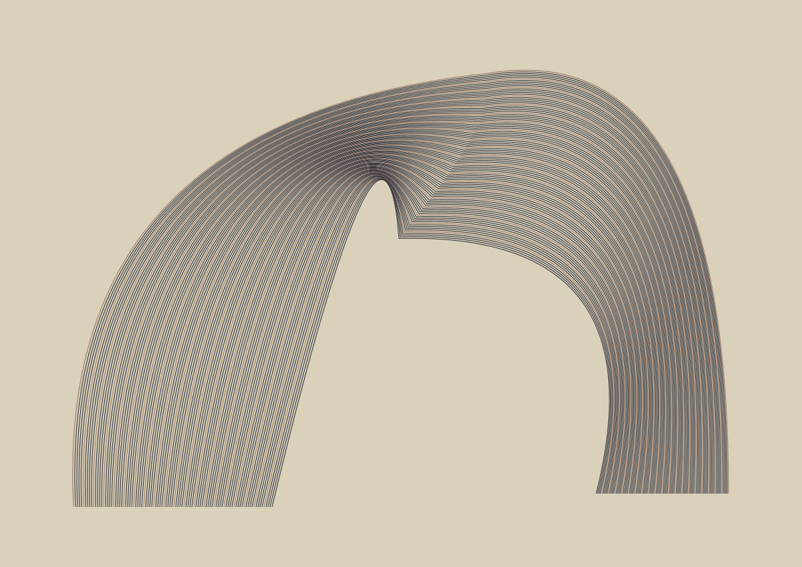
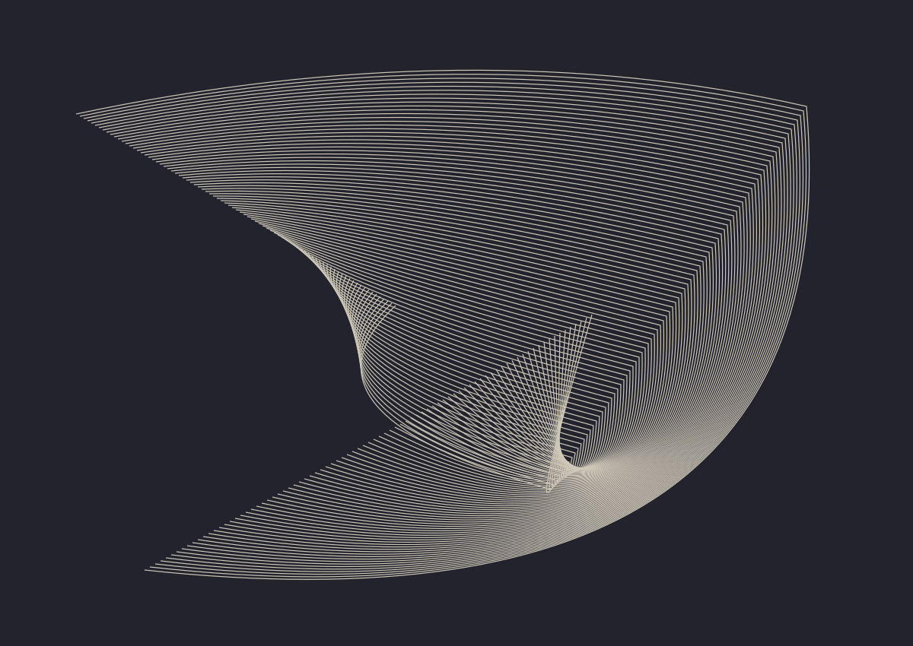

Practice
Open note ERP, in context
A system is also somebody’s working day.
A system is also somebody’s working day.
From a question to a supported change.
Raspberry Pi, home servers, learning close to the hardware.
Processes and web apps, with human judgment still in view.

A developer, a problem solver, a curious person.

A clear problem. A contained scope. A real conversation.
My grounding is in Dynamics 365 F&O and ERP. I’m interested in the connection between what software does and the business work it needs to support.
An ERP requirement does not arrive in isolation. It comes from a process, a person trying to complete a task, or a need shared across teams. I want to understand that context before turning the request into a technical approach. The useful question is not only “what should change?” but also “what should become easier to understand or do?”
My scope spans requirements, technical design, implementation, testing, deployment and support. That gives me a way to connect a decision made early with the behaviour somebody encounters later. Cross-team coordination belongs in that same picture: the work should remain understandable when it moves from one person or team to another.
This is an outline of my professional grounding, not a case study for a named client. There are no invented project dates, performance numbers or customer outcomes behind the illustration. The plate is an original visual exploration of connected structure, not a screenshot of a business system.
I work across the full development path. I find it useful to think of delivery as connected responsibilities, not a handoff that ends when the code is written.
Requirements and technical design set the direction. Understanding the business problem makes it possible to discuss an approach that fits the surrounding system. I want the intent of a request to stay visible as it moves into implementation, rather than disappear into a list of tasks.
Implementation, testing and deployment are connected parts of that responsibility. The change needs to make sense in use, and the route into its intended environment deserves the same care as the code. Clear expectations help people reason about both the behaviour and the transition.
Support and cross-team coordination continue the story. A question after deployment can reveal an assumption worth revisiting. I value communication that makes the next step clear and prevents a problem from getting lost between teams. This is a description of scope and approach, not a claim that every engagement follows an identical process.
Raspberry Pi and homelab/server work are personal interests. I like the possibility of exploring a system at a scale where the parts are close enough to understand.
A small computer invites questions about how software meets the machine it runs on. It is an approachable way to think about a server, its services and the choices around keeping it useful. That is part of what makes the homelab idea interesting to me: not a miniature enterprise to boast about, but a place for learning.
I’m interested in what belongs on a home server, how its pieces connect and how a useful experiment might fit into everyday life. These are directions for curiosity, not a published architecture or a promise of particular uptime. I have not provided a measured installation or a finished project to present here.
The terrain-like lines are an original illustrative study: a field of small changes adding up to a larger shape. They do not depict my equipment or a real network. The distinction matters; an image can carry the feeling of an interest without pretending to document a result.
I’m interested in AI-assisted work processes and AI-assisted web applications. The question that holds my attention is where assistance actually helps a person move a task forward.
It is easy to begin with what a model can generate. I’m more interested in beginning with the work: what somebody is trying to understand, decide or finish. That makes it possible to ask whether assistance belongs in the process at all, and what the person still needs to see or judge.
An experiment can be useful without being a public product or a client success story. The interests collected here are not presented as shipped applications, proven outcomes or measured productivity improvements. I want room to explore the idea without turning an illustrative possibility into a factual claim.
For a web application, the part that interests me is the relationship between a useful interface and an assisted process. The person should be able to understand what is happening and what to do next. This interference plate is an original artwork about overlapping possibilities, not a diagram of an implemented AI system.
I’m Victor Mendivil. My professional grounding is in software development, Dynamics 365 F&O and ERP. I like making a complicated problem understandable enough to work on.
I work through requirements, technical design, implementation, testing, deployment and support, with coordination across teams. I care about the connections between those responsibilities: a request leads to a decision, a decision leads to a change, and that change becomes part of somebody’s day.
Raspberry Pi, homelab/server work and AI-assisted processes and web applications keep drawing my attention. I’m interested in learning how useful pieces fit together. This register puts those interests beside the professional side without turning every curiosity into an invented portfolio project.
A short inventory gives you several ways into the same person. You can begin with ERP, a delivery question or a small-computer interest, then read at your own pace. The images here are original illustrative plates. They are not client work, photographs of me or evidence of a particular achievement.
I’m employed full time. Freelance work needs to fit that reality, rather than imply open-ended availability.
I’m interested in contained needs for individuals or small businesses that can work with remote, evening or asynchronous collaboration. A useful first conversation describes the problem, the kind of help needed and the boundaries around the work. That is a starting point, not a promise of a specific schedule or service package.
I’m also interested in technical-lead and senior roles. My end-to-end development scope and ERP grounding are part of that conversation. There is no invented employer history or resume download attached to this preview.
The real contact route is my LinkedIn profile. This local exploration has no form, inbox or message-delivery service. Nothing you select in the register is sent or saved to a server. The illustration is an original study, not commercial portfolio work.